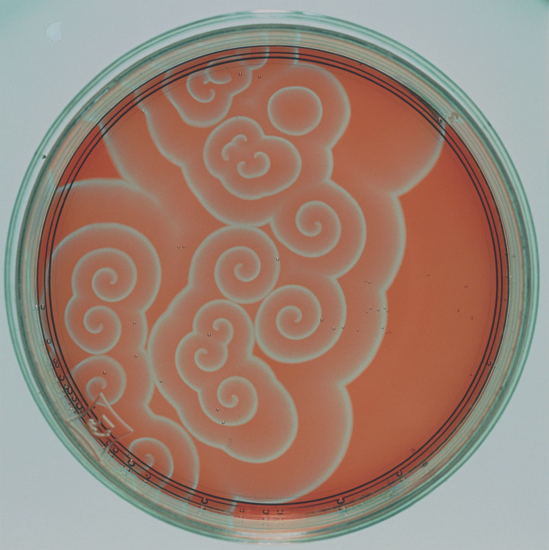

Frontiers in Active Matter Research
The topics we’ll explore today represent the cutting edge of active matter research, where physics meets computation, biology intersects with artificial intelligence, and traditional materials science gives way to adaptive, learning matter. These frontiers push beyond our fundamental understanding of active systems to explore how they can process information, remember past experiences, and adapt their behavior—capabilities that bridge the gap between inanimate matter and living systems. As we progress through each topic, we’ll see how these seemingly distinct phenomena are interconnected, forming a coherent picture of active matter as a platform for distributed computation and adaptive behavior.
Active matter with memory and learning
Having covered the fundamental concepts of active matter in our previous lectures, we now turn to exciting frontiers where active matter research interfaces with concepts from cognitive science. While traditional active matter systems are typically modeled with Markovian dynamics—where future states depend only on the present—cutting-edge research reveals that these systems can exhibit sophisticated memory and learning capabilities that transcend simple stimulus-response behavior.
Building on our understanding of basic active matter principles, we can now explore how these systems store and process information about past states to influence future behavior. Consider examples we’ve previously discussed in a new light: bird flocks maintaining formation patterns despite temporary disruptions, or bacterial colonies adapting growth patterns based on previous environmental exposures. These phenomena point to frontier research questions about memory mechanisms in active systems.
Memory Mechanisms in Active Matter Systems
Recent advances have revealed three key mechanisms through which active matter systems implement memory and learning-like behaviors: Now I have comprehensive information about the sources mentioned in the text. Let me analyze the findings:
- Structural Memory
Active systems can retain information about past states through persistent configurations of their components. This structural memory allows active matter to encode historical information about external stimuli and past states, enabling responses that depend on past experiences.
Building on our earlier discussion of active materials, we can formalize memory effects through internal state variables \(\phi(t)\) that evolve according to:
\[\frac{d\phi(t)}{dt} = F(\phi(t), \varepsilon(t)) - \alpha(\phi(t) - \phi_0)\]
where \(\varepsilon(t)\) represents external stimuli, \(F\) is a nonlinear response function, and the second term represents relaxation toward an equilibrium state \(\phi_0\) with rate \(\alpha\). This equation emerges naturally from considering how physical systems respond to stimuli while simultaneously exhibiting relaxation toward equilibrium - a balance between excitation and decay common in many physical and biological systems.
The nonlinear function \(F\) often takes a sigmoidal form, such as:
\[F(\phi, \varepsilon) = \frac{\varepsilon^n}{K^n + \varepsilon^n} \cdot (1-\phi)\]
This sigmoidal shape arises from the saturation effects inherent in many physical systems - at low stimulus levels, the response increases gradually, then more rapidly at intermediate levels, before saturating at high stimulus intensities. The sigmoidal form is ubiquitous in nature because it represents cooperative effects (captured by the Hill coefficient \(n\)) and provides both signal amplification and noise filtering capabilities. In active matter systems, such nonlinearities can emerge from collective interactions between components that exhibit threshold-like behaviors or positive feedback mechanisms.
The persistence of \(\phi\) over time encodes historical information, as demonstrated in various studies of active matter systems with memory effects. The characteristic memory timescale is determined by \(1/\alpha\), which controls how quickly the system forgets past stimuli in the absence of new inputs.
A well-documented example comes from Palacci et al.’s work (Science, 2013) on light-activated colloidal surfers. When exposed to blue light, these photosensitive active colloids containing hematite and TiO\(_2\) particles organize into specific configurations called “living crystals.” After the light is removed, the particles maintain this organized arrangement for a significant period before gradually returning to random orientation. This demonstrates how the system “remembers” the light pattern through its structural configuration, with \(\phi(t)\) representing the degree of organization and \(\varepsilon(t)\) the light stimulus.
Research in magnetically-responsive materials has shown similar memory effects, where materials can retain deformation patterns that depend on the sequence of applied magnetic fields. In these systems, the internal variable \(\phi(t)\) corresponds to structural reconfigurations within the material that persist after field removal.
In viscoelastic active materials, the strain \(\gamma(t)\) depends on the stress history \(\sigma(\tau)\) for \(\tau < t\) through:
\[\gamma(t) = \int_{-\infty}^{t} J(t-\tau) \frac{d\sigma(\tau)}{d\tau} d\tau\]
where \(J(t)\) is the creep compliance function. As shown in the landmark studies by Prost et al. (Nature Physics, 2015), this mathematical relationship is fundamentally transformed in active matter systems, where molecular motors generate non-equilibrium forces that modify the material’s response. Active particles—like motor proteins in cytoskeletal networks—consume energy to exert forces that continuously remodel the network structure, creating an activity-dependent compliance function \(J(t,a)\), where \(a\) represents activity level. In these systems, microtubules and actin filaments behave as active agents whose self-reorganization persists even after external force removal. The interplay between passive viscoelasticity and active particle dynamics creates a form of structural memory where the configuration depends not just on stress history but also on the history of active particle states—a critical feature for understanding how cytoskeletal networks can “remember” mechanical interactions through the persistent activity of their constituent particles.
Recent experimental and theoretical studies have demonstrated how structural memories in active matter can be programmed and manipulated through controlled external stimuli, opening new possibilities for applications in soft robotics and programmable materials. These advances build on our fundamental understanding of how active systems encode and retrieve information about their stimulus history through physical reconfiguration at the microscopic level.
Chemical memory: Moving beyond the reaction-diffusion systems we’ve studied, frontier research examines how active systems store information through persistent chemical modifications.
Expanding our previous treatment of chemical signaling in active systems, we can describe the evolution of concentration fields \(C(\mathbf{r},t)\) through reaction-diffusion equations with memory effects:
\[\frac{\partial C(\mathbf{r},t)}{\partial t} = D\nabla^2 C(\mathbf{r},t) + R(C,\mathbf{r},t)\]
where \(D\) is the diffusion coefficient and \(R\) represents reaction terms that can create stable patterns persisting far longer than individual particle dynamics.
A concrete example is the Belousov-Zhabotinsky (BZ) reaction in active gels, where chemical oscillations can be “frozen” into stable patterns that persist for hours. In these systems, ruthenium catalysts embedded in polymer networks undergo redox cycles that produce visible color changes (shifting between orange and green states). When exposed to specific light patterns, these oscillations can be locally arrested, creating persistent chemical “imprints” that serve as memory. The local modification of reaction rates creates a spatial chemical memory that outlasts the initial stimulus by factors of 10³-10⁴, effectively encoding information.
Belousov-Zhabotinsky Reaction: Detailed MechanismThe Belousov-Zhabotinsky (BZ) reaction represents a class of non-equilibrium chemical oscillators that demonstrate temporal and spatial pattern formation. The classic BZ reaction involves the oxidation of an organic substrate (typically malonic acid, \(\text{CH}_2(\text{COOH})_2\)) by bromate ions (\(\text{BrO}_3^-\)) in acidic solution, catalyzed by metal ions such as \(\text{Ce}^{3+}\)/\(\text{Ce}^{4+}\) or \(\text{Fe}^{2+}\)/\(\text{Fe}^{3+}\) complexes.
In the ruthenium-catalyzed version used in memory-encoding gels, the reaction involves:
Catalyst states: \(\text{Ru}(\text{bpy})_3^{2+}\) (reduced, orange) and \(\text{Ru}(\text{bpy})_3^{3+}\) (oxidized, green), where bpy is 2,2’-bipyridine
Key reactions:
- Autocatalytic step: \(\text{BrO}_3^- + 5\text{Br}^- + 6\text{H}^+ \rightarrow 3\text{Br}_2 + 3\text{H}_2\text{O}\)
- Catalyst oxidation: \(\text{Ru}(\text{bpy})_3^{2+} + \text{Br}_2 \rightarrow \text{Ru}(\text{bpy})_3^{3+} + 2\text{Br}^- + 2\text{H}^+\)
- Organic substrate reaction: \(2\text{Ru}(\text{bpy})_3^{3+} + \text{CH}_2(\text{COOH})_2 + 2\text{H}_2\text{O} \rightarrow 2\text{Ru}(\text{bpy})_3^{2+} + \text{HCOOH} + 2\text{CO}_2 + 6\text{H}^+\)
Photosensitivity mechanism: The ruthenium complex is photosensitive - blue light (~450 nm) excites \(\text{Ru}(\text{bpy})_3^{2+}\) to produce \(\text{Ru}(\text{bpy})_3^{2+*}\), which can transfer an electron to \(\text{BrO}_3^-\) or other oxidizing agents in the system, generating \(\text{Ru}(\text{bpy})_3^{3+}\) and inhibiting the oscillation.
Memory encoding: When localized areas of the gel are illuminated with patterned blue light, the reaction is inhibited specifically in those regions. This creates a persistent spatial pattern of oxidized and reduced catalyst states that maintains itself through the autocatalytic reaction network dynamics.
The mathematical description of the BZ reaction often uses the Oregonator model, a simplified system of differential equations:
\[\frac{dx}{dt} = k_1y - k_2xy + k_3x(1-x)\] \[\frac{dy}{dt} = -k_1y - k_2xy + k_4z\] \[\frac{dz}{dt} = k_5 - k_4z\]
Where \(x\), \(y\), and \(z\) represent concentrations of key intermediates, typically \(\text{HBrO}_2\) (bromous acid), \(\text{Br}^-\) (bromide ion), and \(\text{Ru}(\text{bpy})_3^{3+}\) (oxidized catalyst).
The photosensitive variant adds a light-dependent term to these equations, allowing external control of the reaction dynamics and enabling the “writing” of persistent chemical patterns that serve as memory.

Figure 1— Belousov-Zhabotinsky reaction pattern A frontier example is seen in the extended Keller-Segel model of chemotaxis, where cells both respond to and modify chemical fields:
\[\frac{\partial \rho}{\partial t} = \nabla \cdot (D_\rho \nabla \rho - \chi \rho \nabla c)\] \[\frac{\partial c}{\partial t} = D_c \nabla^2 c + \alpha \rho - \beta c\]
where \(\rho(\mathbf{r},t)\) represents the cell density (cells per unit volume at position \(\mathbf{r}\) and time \(t\)), \(c(\mathbf{r},t)\) is the concentration of the chemoattractant chemical signal, \(D_\rho\) is the cell diffusion coefficient measuring random cell movement, \(D_c\) is the diffusion coefficient of the chemoattractant, \(\chi\) represents chemotactic sensitivity (the strength with which cells respond to chemical gradients), \(\alpha\) is the production rate of chemoattractant by cells, and \(\beta\) is the degradation/decay rate of the chemoattractant.
In the first equation, \(D_\rho \nabla \rho\) describes cells’ random diffusive motion, while \(-\chi \rho \nabla c\) represents directed movement of cells up the chemical gradient (the actual chemotaxis). The divergence operator \(\nabla \cdot\) ensures conservation of cell number. In the second equation, \(D_c \nabla^2 c\) models how the chemical diffuses through space, \(\alpha \rho\) captures how cells produce the chemical signal (proportional to cell density), and \(-\beta c\) accounts for the natural breakdown of the chemical over time.
While this model was originally developed for bacterial chemotaxis, similar principles apply to the remarkable maze-solving abilities of the slime mold Physarum polycephalum. The slime mold uses a different but related mechanism: as it explores a maze, it deposits persistent chemical trails and maintains a network of protoplasmic tubes. The tube conductivity depends on flow history, effectively implementing a form of chemical memory. When encountering a previously visited dead-end, the reduced tube conductivity “remembers” the unsuccessful path. This network-based memory allows the organism to solve complex mazes by maintaining information about path quality through persistent physical and chemical modifications.
Pattern Formation in Chemical Memory Systems: A beautiful example of chemical memory through pattern formation can be seen in the Gray-Scott reaction-diffusion system:
\[\frac{\partial u}{\partial t} = \nabla^2 u + u^2v - (a+b)u\] \[\frac{\partial v}{\partial t} = D\nabla^2 v - u^2v + a(1-v)\]
where \(u\) and \(v\) are chemical concentrations, \(D\) is the diffusion coefficient ratio (typically \(D = 2\)), and \(a\) and \(b\) are reaction parameters. The dependencies in these equations reflect the underlying chemical processes: the \(\nabla^2\) terms represent diffusion of chemicals through space, with \(v\) diffusing at rate \(D\) relative to \(u\). The nonlinear term \(u^2v\) appears in both equations with opposite signs because it models an autocatalytic reaction where one molecule of \(u\) and two molecules of \(v\) interact to produce three molecules of \(v\) (consuming \(u\) while producing more \(v\)). The term \((a+b)u\) represents removal of \(u\) through both feeding of fresh chemicals (\(a\)) and conversion/decay (\(b\)), while \(a(1-v)\) represents the feeding of \(v\) at a rate proportional to how far it is from saturation. This system exhibits an extraordinary range of behaviors depending on the parameter values: stable spot patterns, labyrinthine structures, moving spots, pulsating dynamics, and spatiotemporal chaos. These patterns persist long after initial perturbations, serving as spatial memory of the initial conditions and parameter history. The rich parameter space allows encoding different types of chemical memories through distinct pattern morphologies.
Gray-Scott Reaction-Diffusion System
Pattern Selection
Manual Parameter Control
Step: 0
Speed: NormalThis interactive simulation demonstrates how the Gray-Scott system creates persistent chemical memory patterns. You can:
- Select different parameter regimes from the dropdown
- Manually adjust feed (a) and kill (b) rates using sliders
- Click on the canvas to add perturbations and observe pattern formation
- Pause/resume the simulation to observe steady-state patterns
The patterns that emerge represent different forms of chemical memory - from stable spots that remember initial conditions to complex labyrinthine structures that encode spatial information about the system’s history.
From Memory to Learning: The memory mechanisms we’ve just explored provide the foundation for an even more remarkable phenomenon: the capacity for active matter systems to learn and adapt their behavior based on experience. While memory allows systems to store information about past states, learning enables them to use this stored information to make better decisions in the future. This transition from passive memory storage to active learning represents one of the most exciting frontiers in active matter research, where we move beyond simple stimulus-response behaviors to observe genuine adaptive intelligence emerging from physical systems.
Learning in Active Matter
A particularly exciting frontier is the emergence of learning capabilities in active matter—adaptive responses to environmental cues that improve over time through experience. This represents a bridge between physical and cognitive sciences that goes beyond the basic active matter principles we’ve covered previously, fundamentally connecting to reinforcement learning theory from artificial intelligence.
Reinforcement Learning Fundamentals
To understand learning in active matter, we must first establish the core concepts of reinforcement learning (RL). At its heart, RL is a framework where an agent interacts with an environment through a cycle of observation, action, and reward:
- Agent: The learning entity (e.g., a microswimmer, bacterial colony, or synthetic particle)
- Environment: The external conditions the agent must navigate (e.g., nutrient gradients, flow fields, obstacles)
- State \(\mathbf{s}\): The current configuration of the environment that the agent can observe
- Action \(\mathbf{a}\): The choices available to the agent (e.g., swimming direction, growth rate, aggregation behavior)
- Reward \(R(\mathbf{s}, \mathbf{a})\): The feedback signal indicating the quality of an action in a given state
The agent’s goal is to learn an optimal policy \(\pi^*(\mathbf{a}|\mathbf{s})\) that maximizes the expected cumulative reward:
\[\pi^* = \arg\max_\pi \mathbb{E}_\pi\left[\sum_{t=0}^{\infty} \gamma^t R(\mathbf{s}_t, \mathbf{a}_t)\right]\]
where \(\gamma \in [0,1]\) is a discount factor that prioritizes immediate rewards over future ones. - Actions are chosen according to \(\mathbf{a}_t \sim \pi(\cdot|\mathbf{s}_t)\) - State transitions occur according to the environment dynamics \(\mathbf{s}_{t+1} \sim P(\cdot|\mathbf{s}_t, \mathbf{a}_t)\)
The discount factor \(\gamma \in [0,1]\) prioritizes immediate rewards over future ones, addressing both mathematical convergence and reflecting the preference for earlier rewards.
With these core concepts established, we can now delve into the mathematical machinery that makes reinforcement learning possible. The key insight is that optimal decision-making can be formulated as a dynamic programming problem, where we systematically evaluate the long-term consequences of actions. The following concepts provide the theoretical foundation that enables active matter systems to implement sophisticated learning behaviors.
Key Reinforcement Learning Concepts
Value Functions: Central to RL is the concept of value functions, which estimate the expected future reward from any given state or state-action pair:
- State-value function: \(V^\pi(\mathbf{s}) = \mathbb{E}_\pi\left[\sum_{t=0}^{\infty} \gamma^t R(\mathbf{s}_t, \mathbf{a}_t) | \mathbf{s}_0 = \mathbf{s}\right]\)
- Action-value function: \(Q^\pi(\mathbf{s}, \mathbf{a}) = \mathbb{E}_\pi\left[\sum_{t=0}^{\infty} \gamma^t R(\mathbf{s}_t, \mathbf{a}_t) | \mathbf{s}_0 = \mathbf{s}, \mathbf{a}_0 = \mathbf{a}\right]\)
The optimal policy satisfies the Bellman equation:
\[Q^*(\mathbf{s}, \mathbf{a}) = R(\mathbf{s}, \mathbf{a}) + \gamma \sum_{\mathbf{s}'} P(\mathbf{s}'|\mathbf{s}, \mathbf{a}) \max_{\mathbf{a}'} Q^*(\mathbf{s}', \mathbf{a}')\]
where \(P(\mathbf{s}'|\mathbf{s}, \mathbf{a})\) is the transition probability from state \(\mathbf{s}\) to \(\mathbf{s}'\) under action \(\mathbf{a}\).
Learning Algorithms: Active matter systems can implement various reinforcement learning algorithms that enable them to improve their behavior through experience. Let’s examine how these algorithms work in detail:
Q-learning: A model-free algorithm that learns the value of actions in specific states without requiring a model of the environment. The core update equation is: \[Q(\mathbf{s}, \mathbf{a}) \leftarrow Q(\mathbf{s}, \mathbf{a}) + \alpha \left[R(\mathbf{s}, \mathbf{a}) + \gamma \max_{\mathbf{a}'} Q(\mathbf{s}', \mathbf{a}') - Q(\mathbf{s}, \mathbf{a})\right]\]
This equation represents how the system updates its estimate of the action-value function \(Q(\mathbf{s}, \mathbf{a})\) after taking action \(\mathbf{a}\) in state \(\mathbf{s}\) and observing reward \(R(\mathbf{s}, \mathbf{a})\) and new state \(\mathbf{s}'\). Breaking it down:
- \(\alpha\) is the learning rate that controls how much new information overrides old information
- \(R(\mathbf{s}, \mathbf{a})\) is the immediate reward received
- \(\gamma \max_{\mathbf{a}'} Q(\mathbf{s}', \mathbf{a}')\) represents the maximum expected future reward from the next state \(\mathbf{s}'\)
- The term in brackets is called the TD-error, representing the difference between the current estimate and the improved estimate
The algorithm proceeds by repeatedly: (1) observing the current state, (2) selecting and executing an action (typically using an ε-greedy policy that balances exploration and exploitation), (3) observing the reward and next state, (4) updating the Q-value using the equation above, and (5) transitioning to the next state. Over time, the Q-values converge to the optimal action-value function \(Q^*\), enabling the system to select optimal actions in any state.
Policy gradient methods: These algorithms directly optimize the policy without learning a value function. They work by adjusting policy parameters \(\boldsymbol{\theta}\) to maximize expected returns through gradient ascent: \[\nabla_{\boldsymbol{\theta}} J(\boldsymbol{\theta}) = \mathbb{E}_\pi\left[\sum_{t=0}^{\infty} \nabla_{\boldsymbol{\theta}} \log \pi_{\boldsymbol{\theta}}(\mathbf{a}_t|\mathbf{s}_t) Q^\pi(\mathbf{s}_t, \mathbf{a}_t)\right]\]
This equation expresses the gradient of the expected return \(J(\boldsymbol{\theta})\) with respect to policy parameters \(\boldsymbol{\theta}\). Let’s understand each component:
- \(\nabla_{\boldsymbol{\theta}} \log \pi_{\boldsymbol{\theta}}(\mathbf{a}_t|\mathbf{s}_t)\) is the gradient of the log probability of taking action \(\mathbf{a}_t\) in state \(\mathbf{s}_t\)
- \(Q^\pi(\mathbf{s}_t, \mathbf{a}_t)\) is the action-value under the current policy
- The expectation \(\mathbb{E}_\pi\) averages over trajectories sampled from the policy
The algorithm operates by: (1) sampling trajectories by following the current policy, (2) estimating the action-values, (3) computing the gradient using the equation above, (4) updating the policy parameters: \(\boldsymbol{\theta} \leftarrow \boldsymbol{\theta} + \beta \nabla_{\boldsymbol{\theta}} J(\boldsymbol{\theta})\) where \(\beta\) is the step size, and (5) repeating until convergence. This approach is particularly valuable for continuous action spaces common in active matter systems, as it can learn stochastic policies with continuous outputs.
Temporal difference (TD) learning: This approach updates value estimates based on the difference between consecutive predictions without waiting for final outcomes. The update rule is: \[V(\mathbf{s}_t) \leftarrow V(\mathbf{s}_t) + \alpha \left[R(\mathbf{s}_t, \mathbf{a}_t) + \gamma V(\mathbf{s}_{t+1}) - V(\mathbf{s}_t)\right]\]
This equation shows how to update the estimate of the state-value function \(V(\mathbf{s}_t)\). Examining each term:
- \(V(\mathbf{s}_t)\) is the current estimate of the value of state \(\mathbf{s}_t\)
- \(R(\mathbf{s}_t, \mathbf{a}_t)\) is the immediate reward after taking action \(\mathbf{a}_t\)
- \(\gamma V(\mathbf{s}_{t+1})\) is the discounted estimate of the next state’s value
- The term in brackets is the TD-error, representing the difference between the current estimate and the observed reward plus next state value
The algorithm operates by: (1) observing state \(\mathbf{s}_t\), (2) selecting and executing action \(\mathbf{a}_t\) according to policy \(\pi\), (3) observing reward \(R(\mathbf{s}_t, \mathbf{a}_t)\) and next state \(\mathbf{s}_{t+1}\), (4) updating the value estimate using the equation above, and (5) moving to the next state. TD learning is particularly useful in active matter systems because it can learn from incomplete sequences and ongoing interactions, without requiring episodes to terminate.
The mathematical framework we’ve established provides the theoretical foundation, but the true excitement lies in how these abstract concepts manifest in real physical systems. Active matter systems naturally implement many of the computational primitives required for reinforcement learning—they can sense their environment, execute actions, and modify their behavior based on outcomes. What makes this particularly remarkable is that these learning capabilities emerge from the collective behavior of simple physical components, without any centralized control or explicit programming.
Applications to Active Matter Systems
Active matter systems implement reinforcement learning through various mechanisms that arise naturally from their physical properties and interactions. These implementations span both biological and synthetic systems, with remarkable parallels to the abstract frameworks of reinforcement learning we’ve discussed.
Biological Systems Implementing RL:
Bacterial Chemotaxis as Temporal Difference Learning: Consider the navigation strategy of E. coli bacteria. These microorganisms navigate chemical gradients through a sophisticated biochemical network that functions remarkably similar to Q-learning algorithms. At the molecular level, this process centers on the phosphorylation state of the CheY protein, which directly controls the flagellar motor switching between running (straight swimming) and tumbling (random reorientation) behaviors.
The phosphorylated CheY protein state (CheY-P) effectively encodes a form of value function, with its concentration determining how the bacterium evaluates its current state. The temporal evolution of this internal state follows:
\[\text{CheY-P}(t+1) = \text{CheY-P}(t) + \alpha \left[\text{Nutrient}(t) - \text{CheY-P}(t)\right]\]
This equation reveals the essence of temporal difference learning in a physical system. The bacterium continuously updates its internal state based on the difference between the actual nutrient concentration encountered and its previous internal representation. The parameter \(\alpha\) serves as a learning rate, determining how quickly the bacterium adapts to new information.
When a bacterium moves up a nutrient gradient, the positive difference between nutrient concentration and the internal state leads to a decrease in CheY-P, which reduces tumbling frequency and prolongs runs in favorable directions. Conversely, movement down a gradient increases CheY-P concentration, increasing tumbling frequency to facilitate course correction. This elegant adaptation mechanism allows bacteria to navigate complex chemical landscapes with remarkable efficiency despite their limited sensory capabilities.
Slime Mold Network Adaptation: The slime mold Physarum polycephalum demonstrates a more complex form of reinforcement learning through its adaptive tube network morphology. This single-celled organism, despite lacking a central nervous system, can solve spatial optimization problems like finding the shortest path through a maze or creating efficient transport networks.
The physical mechanism underlying this learning ability lies in the flow-dependent adaptation of its tubular network. Tubes carrying higher flow become reinforced, while those with little flow gradually thin and eventually disappear. This process can be modeled mathematically as:
\[\frac{dD_{ij}}{dt} = f(Q_{ij}) - \gamma D_{ij}\]
Here, the tube diameter \(D_{ij}\) between locations \(i\) and \(j\) changes according to the quality of flow \(Q_{ij}\) through that tube, with a natural decay term \(\gamma D_{ij}\) representing the energetic cost of maintaining the tube. The function \(f(Q_{ij})\) is typically nonlinear, often modeled as \(f(Q_{ij}) = |Q_{ij}|^\mu\) where \(\mu > 0\) determines the sensitivity to flow.
From a reinforcement learning perspective, the tube diameters effectively store Q-values (estimates of path quality), while the flow-dependent reinforcement implements a form of policy improvement. The slime mold’s tube network physically embodies both the memory of past successes and the policy for future exploration. The decay term introduces a bias toward parsimony, ensuring the network converges toward an optimal solution that balances efficiency with resource constraints.
Ant Colony Foraging as Distributed Q-Learning: Ant colonies demonstrate collective reinforcement learning through their pheromone-based foraging strategies. Individual ants deposit pheromones along paths, with successful foraging trips resulting in stronger pheromone trails. The collective behavior of the colony implements a sophisticated form of distributed Q-learning.
The pheromone concentration \(\tau_{ij}\) on a path segment from location \(i\) to \(j\) evolves according to:
\[\tau_{ij}(t+1) = (1-\rho)\tau_{ij}(t) + \sum_{k} \Delta\tau_{ij}^k\]
where \(\rho\) represents the pheromone evaporation rate (effectively a forgetting mechanism that enables adaptation to changing environments), and \(\Delta\tau_{ij}^k\) is the amount of pheromone deposited by the \(k\)-th ant. The pheromone deposition typically depends on the quality of the food source found and the path length, creating a natural reward function.
The probability that an ant chooses a particular path follows a softmax policy:
\[P_{ij} = \frac{\tau_{ij}^\alpha \eta_{ij}^\beta}{\sum_{k} \tau_{ik}^\alpha \eta_{ik}^\beta}\]
In this equation, \(\eta_{ij}\) represents a heuristic desirability of the path (often inversely proportional to distance), while \(\alpha\) and \(\beta\) control the relative influence of learned information (pheromones) versus innate preference (heuristic information). This balance between exploitation of known good paths and exploration of potentially better alternatives is a fundamental aspect of reinforcement learning that emerges naturally from the physics and chemistry of pheromone deposition and sensing.
The softmax policy represents a fundamental concept in reinforcement learning that converts action values (such as Q-values) into a probability distribution for action selection. Mathematically, the general form of the softmax policy is:
\[\pi(a|s) = \frac{e^{Q(s,a)/\tau}}{\sum_{a'} e^{Q(s,a')/\tau}}\]
where \(\pi(a|s)\) is the probability of selecting action \(a\) in state \(s\), \(Q(s,a)\) represents the estimated value of taking action \(a\) in state \(s\), and \(\tau\) is a temperature parameter controlling exploration/exploitation:
- As \(\tau \rightarrow 0\), softmax approaches a greedy policy (pure exploitation)
- As \(\tau \rightarrow \infty\), softmax approaches random action selection (pure exploration)
The ant colony formula represents a modified softmax where:
- \(\tau_{ij}^\alpha\) replaces \(e^{Q(s,a)/\tau}\) for pheromone influence
- \(\eta_{ij}^\beta\) incorporates heuristic information not found in standard softmax
- The parameters \(\alpha\) and \(\beta\) adjust the influence of learned versus innate information
This formulation enables the colony to balance exploitation of known good paths with exploration of potentially better alternatives. The softmax policy is particularly valuable in stochastic environments where maintaining a distribution over actions rather than selecting a single best action can lead to more robust learning and performance.
Ant Colony Foraging Simulation
Simulation Parameters
• Blue circle: Nest
• Green circle: Food source
• Click "Add Obstacle" then click canvas to place obstacles
• Watch pheromone trails emerge (red intensity)
• Observe path optimization over time
Ants at Food: 0
Strongest Path: Forming...
This interactive simulation demonstrates the key principles of ant colony optimization as a form of distributed reinforcement learning:
Key Features:
- Pheromone Dynamics: Red trails show pheromone concentration, implementing the equation \(\tau_{ij}(t+1) = (1-\rho)\tau_{ij}(t) + \sum_{k} \Delta\tau_{ij}^k\)
- Softmax Decision Making: Ants choose paths based on both pheromone strength (α parameter) and distance heuristics (β parameter)
- Adaptive Behavior: Watch how optimal paths emerge through collective exploration and exploitation
- Environmental Challenges: Add obstacles to see how the colony adapts its foraging strategy
Synthetic Active Matter Systems:
Adaptive Materials with Feedback Mechanisms: Moving beyond biological systems, researchers have developed synthetic materials that implement reinforcement learning principles through their physical structure and dynamics. These adaptive materials change their properties in response to environmental conditions, with configurations that lead to favorable outcomes becoming reinforced through physical mechanisms.
Consider a magnetically responsive elastomer embedded with magnetic particles. When subjected to an external magnetic field, the material deforms as particles align with the field. If this deformation leads to a more stable configuration or reduces mechanical stress, the physical restructuring of the polymer matrix can create persistent pathways that effectively “remember” successful configurations. This memory emerges from the minimization of free energy in the system, with repeated exposures leading to increasingly optimized responses.
The physical learning process can be described through an effective free energy landscape that evolves with each exposure:
\[F_{\text{eff}}(x, t) = F_0(x) - \sum_{i=1}^{n(t)} \alpha_i W_i(x)\]
Here, \(F_0(x)\) represents the initial free energy landscape, \(W_i(x)\) captures the work done during the \(i\)-th exposure, and \(\alpha_i\) represents the learning rate. As the material experiences repeated stimuli, it progressively modifies its internal structure to minimize this effective free energy, a process mathematically analogous to policy gradient methods in reinforcement learning.
Photosensitive Particle Systems with Adaptive Navigation: Engineered microparticles can implement reinforcement learning through light-responsive mechanisms that modify their behavior based on environmental feedback. For example, photosensitive Janus particles with asymmetric surface coatings can be propelled and steered by controlled light stimuli that adjust in real-time based on navigation performance.
Consider a light-powered microswimmer whose motion is modulated by spatially patterned illumination through a feedback control system:
\[v(t) = v_0 + \Delta v \cdot s(t)\] \[\frac{ds(t)}{dt} = k_{\text{on}}r(t)(1-s(t)) - k_{\text{off}}s(t)\]
where \(v(t)\) is the particle velocity, \(s(t)\) is an internal state variable representing the particle’s photoresponsiveness, and \(r(t)\) is a reward signal derived from the particle’s navigation performance (such as progress toward a target). The parameters \(k_{\text{on}}\) and \(k_{\text{off}}\) control how quickly the system responds to navigational feedback.
This closed-loop control system implements a form of value-based learning, where the light stimulus patterns are continuously adjusted based on navigation outcomes. When the particle successfully moves toward its target, the control system increases illumination patterns that reinforce this trajectory. Conversely, when the particle veers off course, the light patterns are modified to correct its path. Over time, the control algorithm learns optimal illumination patterns for different environmental configurations, effectively encoding a navigation policy in the light-response dynamics. This creates a physical implementation of reinforcement learning where the particle “learns” to navigate complex environments through adaptive light-based feedback without requiring internal computation.
Collective Learning in Microswimmer Swarms: The most sophisticated synthetic implementations of reinforcement learning emerge in systems of interacting active particles. Microswimmer swarms can exhibit collective intelligence through distributed learning processes that optimize group behavior.
In these systems, each agent \(i\) develops its own policy \(\pi_i\) while considering the actions of other agents. The challenge of coordinating multiple learning agents stems from the exponentially large joint action space. A practical approach decomposes the global Q-function into pairwise interactions:
\[Q_i(\mathbf{s}, \mathbf{a}_i, \mathbf{a}_{-i}) \approx \sum_{j \neq i} Q_{ij}(\mathbf{s}, \mathbf{a}_i, \mathbf{a}_j)\]
where \(\mathbf{a}_{-i}\) represents all other agents’ actions. This decomposition makes the learning problem tractable while still capturing essential agent interactions.
Physically, this manifests in systems where individual microswimmers adjust their behavior based on local interactions and environmental feedback. For example, microswimmers with tunable hydrophobicity can form dynamic structures that adapt to fluid flow conditions. The collective structure evolves according to both individual learning (each particle optimizing its own state) and emergent properties of the group (stabilization of beneficial collective configurations).
The physical substrate for this learning involves both chemical signaling between particles (analogous to pheromones in ant colonies) and direct mechanical interactions. Energy dissipation patterns during collective motion provide a natural reward signal, with configurations that minimize viscous dissipation being inherently favored:
\[R_{\text{collective}} \propto -\int_V \mu (\nabla \mathbf{v} + \nabla \mathbf{v}^T)^2 dV\]
This physics-based reward function creates a natural drive toward efficient collective motion patterns, with the system’s dissipative nature serving as both the computational substrate and the optimization mechanism for reinforcement learning.
Scaling to Complex Intelligence: These examples demonstrate how active matter implements basic RL through physical mechanisms. The frontier lies in scaling these capabilities to handle complex environments and decision-making. Just as AI was revolutionized by deep learning, researchers are developing active matter systems that can handle high-dimensional state spaces and implement sophisticated learning algorithms—a leap from simple adaptive behaviors to physical artificial intelligence.
Advanced Topics: Deep RL and Active Matter
Recent advances combine deep learning with reinforcement learning to create more sophisticated active matter systems:
Deep Q-Networks (DQN): Neural networks approximate Q-values for complex state spaces. In active matter, this enables learning in high-dimensional environments such as turbulent flows or complex geometries:
\[Q(\mathbf{s}, \mathbf{a}; \boldsymbol{\theta}) \approx Q^*(\mathbf{s}, \mathbf{a})\]
where \(\boldsymbol{\theta}\) represents the neural network parameters updated through backpropagation.
Collective Intelligence: Multi-agent systems can exhibit emergent collective intelligence where the group’s learning capability exceeds that of individual agents. This is formalized through the concept of emergent value functions:
\[V_{\text{collective}}(\mathbf{S}) > \sum_{i=1}^N V_i(\mathbf{s}_i)\]
where \(\mathbf{S}\) represents the global state and \(\mathbf{s}_i\) are individual agent states.
Confronting Reality: The Path from Laboratory to Application: While the theoretical foundations and proof-of-concept demonstrations we’ve explored are compelling, the transition from laboratory curiosities to practical applications faces significant challenges. The controlled conditions of most current experiments—clean environments, simplified geometries, and well-defined reward structures—represent only a fraction of the complexity that real-world active matter systems must navigate. Understanding and overcoming these challenges is crucial for realizing the full potential of learning active matter systems and represents the cutting edge of current research efforts.
Challenges and Future Directions
The application of reinforcement learning to active matter faces several unique challenges:
Continuous state-action spaces: Unlike discrete RL problems, active matter systems operate in continuous space with continuous actions, requiring specialized algorithms like Deep Deterministic Policy Gradients (DDPG).
Partial observability: Active matter agents often have limited sensing capabilities, necessitating methods that can handle partially observable Markov decision processes (POMDPs).
Non-stationarity: The environment may change over time, requiring adaptive learning algorithms that can handle concept drift.
Physical constraints: Energy limitations and mechanical constraints must be incorporated into the reward structure and action space.
The mathematical frameworks increasingly incorporate elements from information theory, such as mutual information \(I(X;Y) = \sum_{x,y} p(x,y) \log \frac{p(x,y)}{p(x)p(y)}\) to quantify learning efficiency and memory capacity. This convergence of active matter physics with machine learning opens pathways to entirely new classes of adaptive materials that can learn, remember, and make decisions—connecting directly to our next topic on information processing in active systems.
Measuring Learning Performance: The effectiveness of learning in active matter systems can be quantified through several metrics:
- Sample efficiency: How quickly the system learns optimal behavior
- Generalization: Ability to transfer learned behaviors to new environments
- Robustness: Stability of learned policies under perturbations
- Collective performance: For multi-agent systems, how well the group coordinates
These metrics provide frameworks for designing and optimizing learning active matter systems, establishing this as a rich frontier combining statistical physics, machine learning, and materials science.
Bridging Learning and Information Processing: The learning capabilities we’ve explored represent just one facet of a broader phenomenon: active matter systems as sophisticated information processors. While learning focuses on adaptation and improvement over time, information processing encompasses the full spectrum of how active systems detect, integrate, store, and respond to environmental signals. This naturally leads us to examine the computational capabilities that emerge from collective active matter dynamics.
Information processing in active systems
Active matter systems perform sophisticated information processing tasks despite lacking centralized control mechanisms. This distributed computation emerges from local interactions between components and their environment, enabling complex collective behaviors and decision-making.
Key aspects of information processing in active systems include:
Signal detection and amplification: Active systems can detect weak environmental signals and amplify them through collective responses, as seen in quorum sensing in bacterial colonies. The dynamics can be described by threshold-activated amplification:
\[\frac{dR}{dt} = k_{\text{on}}S(1-R) - k_{\text{off}}R\]
where \(R\) represents the response variable, \(S\) is the signal, and \(k_{\text{on}}\), \(k_{\text{off}}\) are activation/deactivation rates. Critically, many active systems exhibit ultra-sensitivity where the steady-state response follows a Hill function:
\[R_{\text{ss}} = \frac{S^n}{K^n + S^n}\]
with Hill coefficient \(n\) controlling sensitivity. Collective amplification emerges when individual responses couple through a feedback loop:
\[\frac{dS}{dt} = \alpha + \beta R - \gamma S\]
creating systems capable of detecting signals far below individual detection thresholds through mechanisms mathematically analogous to stochastic resonance.
Information integration: The ability to combine multiple inputs and generate appropriate outputs, similar to logical operations in electronic circuits. This can be formalized using coupled differential equations where multiple input signals \(S_1, S_2, ..., S_n\) influence a response \(R\):
\[\frac{dR}{dt} = f(S_1, S_2, ..., S_n, R)\]
The function \(f\) can implement various logical operations. For example, an AND gate occurs when:
\[f(S_1, S_2, R) = k_1 S_1 S_2 (1-R) - k_2 R\]
These integrative capabilities enable decision-making based on complex environmental conditions, as seen in the slime mold Physarum polycephalum, which solves maze problems by following chemical gradients and optimizing tube flow networks. The organism detects gradients of chemoattractants diffusing from food sources and develops thick protoplasmic tubes along paths with higher nutrient flux, effectively implementing a distributed shortest-path algorithm through physical tube dynamics rather than explicit reaction-diffusion computation.
Spatiotemporal pattern formation: Creation and manipulation of information-rich patterns that serve as distributed memory or computational substrates. The classic mathematical framework is the reaction-diffusion system:
\[\frac{\partial u}{\partial t} = D_u \nabla^2 u + f(u,v)\] \[\frac{\partial v}{\partial t} = D_v \nabla^2 v + g(u,v)\]
where \(u\) and \(v\) are interacting species with diffusion coefficients \(D_u\) and \(D_v\). These equations can generate Turing patterns, spirals, and traveling waves that encode and process information spatially. In active nematics, pattern formation follows the order parameter dynamics:
\[\frac{\partial \mathbf{Q}}{\partial t} + \mathbf{v} \cdot \nabla \mathbf{Q} = \Gamma \mathbf{H} + \mathbf{Q} \cdot \mathbf{\Omega} - \mathbf{\Omega} \cdot \mathbf{Q} + \lambda \mathbf{E}\]
where \(\mathbf{H}\) is the molecular field, \(\Gamma\) is a rotational diffusion constant, and \(\lambda\) is the flow alignment parameter. These patterns can serve as physical implementations of cellular automata capable of universal computation.
Noise filtering: Robust information processing despite internal and external fluctuations. This can be understood through the framework of stochastic differential equations:
\[\frac{dx}{dt} = f(x) + g(x)\xi(t)\]
where \(\xi(t)\) represents noise with statistical properties \(\langle \xi(t) \rangle = 0\) and \(\langle \xi(t)\xi(t') \rangle = \delta(t-t')\). Active systems can exploit noise constructively through mechanisms like stochastic resonance, where moderate noise optimizes signal detection:
\[SNR \propto A^2 \exp\left(-\frac{\Delta V}{D}\right)\]
where \(A\) is signal amplitude, \(\Delta V\) is an energy barrier, and \(D\) is noise intensity. Collective systems often demonstrate enhanced noise filtering through redundancy and averaging, as formalized by the central limit theorem, reducing effective noise by a factor of \(\sqrt{N}\) for \(N\) coupled agents.
Physical reservoir computing: A powerful paradigm where the intrinsic high-dimensional dynamics of active matter systems are harnessed to perform complex computations. In reservoir computing, a dynamical system serves as a “reservoir” that transforms input signals into a higher-dimensional space where complex patterns become more easily separable. The mathematical formulation of reservoir computing can be expressed through the following system of equations:
\[\mathbf{x}(t+\Delta t) = f(\mathbf{x}(t), \mathbf{W}_{\text{in}}\mathbf{u}(t))\] \[\mathbf{y}(t) = \mathbf{W}_{\text{out}}\mathbf{x}(t)\]
where \(\mathbf{x}(t) \in \mathbb{R}^N\) represents the high-dimensional state of the reservoir with \(N\) internal units, \(\mathbf{u}(t) \in \mathbb{R}^K\) is the input signal with \(K\) dimensions, \(\mathbf{W}_{\text{in}} \in \mathbb{R}^{N \times K}\) maps inputs to the reservoir, \(f: \mathbb{R}^N \times \mathbb{R}^N \rightarrow \mathbb{R}^N\) is the reservoir’s nonlinear dynamics, \(\mathbf{W}_{\text{out}} \in \mathbb{R}^{L \times N}\) is a readout matrix, and \(\mathbf{y}(t) \in \mathbb{R}^L\) is the system output with \(L\) dimensions.
The echo state property, which is fundamental to reservoir computing, can be formally defined as follows: For any two initial states \(\mathbf{x}_1(0)\) and \(\mathbf{x}_2(0)\), and for any input sequence \(\mathbf{u}(t)\), the difference between the resulting states \(\|\mathbf{x}_1(t) - \mathbf{x}_2(t)\|\) must approach zero as \(t \rightarrow \infty\). This property ensures that the reservoir’s state depends asymptotically only on the input history and not on initial conditions. For recurrent neural network reservoirs, this property is typically ensured by constraining the spectral radius \(\rho(\mathbf{W}) < 1\), where \(\mathbf{W}\) is the reservoir’s internal connection matrix.
The mathematical formulation of the training process involves solving the following optimization problem:
\[\mathbf{W}_{\text{out}} = \arg\min_{\mathbf{W}} \sum_{t=t_0}^{T} \|\mathbf{y}_{\text{target}}(t) - \mathbf{W}\mathbf{x}(t)\|^2 + \lambda\|\mathbf{W}\|^2\]
where \(\mathbf{y}_{\text{target}}(t)\) is the desired output, \(t_0\) is the initial time after washout period, \(T\) is the final time step, and \(\lambda\) is a regularization parameter. The closed-form solution using ridge regression is:
\[\mathbf{W}_{\text{out}} = \mathbf{Y}\mathbf{X}^T(\mathbf{X}\mathbf{X}^T + \lambda\mathbf{I})^{-1}\]
where \(\mathbf{X} = [\mathbf{x}(t_0), \mathbf{x}(t_0+1), ..., \mathbf{x}(T)]\) is the matrix of reservoir states and \(\mathbf{Y} = [\mathbf{y}_{\text{target}}(t_0), \mathbf{y}_{\text{target}}(t_0+1), ..., \mathbf{y}_{\text{target}}(T)]\) is the matrix of target outputs.
The memory capacity of a reservoir, which quantifies how much information about past inputs is retained in the current state, can be mathematically defined as:
\[MC = \sum_{k=1}^{\infty} MC_k = \sum_{k=1}^{\infty} \frac{\text{cov}^2(u(t-k), y_k(t))}{\text{var}(u(t))\text{var}(y_k(t))}\]
where \(y_k(t)\) is the output trained to reproduce the input from \(k\) time steps in the past. For linear reservoirs, the theoretical upper bound of the memory capacity is the number of reservoir nodes \(N\).
The information processing capability of the reservoir can be quantified using the kernel quality measure:
\[K(\mathbf{u}_i,\mathbf{u}_j) = \langle\mathbf{x}(\mathbf{u}_i),\mathbf{x}(\mathbf{u}_j)\rangle\]
This kernel function measures the similarity between reservoir states \(\mathbf{x}(\mathbf{u}_i)\) and \(\mathbf{x}(\mathbf{u}_j)\) produced by different input sequences \(\mathbf{u}_i\) and \(\mathbf{u}_j\). A high-quality reservoir should map similar inputs to similar states while mapping distinct inputs to orthogonal states, maximizing the separability of different input patterns.
Active matter systems are ideal physical reservoirs because they naturally exhibit rich nonlinear dynamics with high-dimensional state spaces; fading memory (echo state property) where past inputs affect current states with diminishing influence; and complex spatiotemporal patterns that can encode and process information.
Synthetic active particles as physical reservoirs: Recent breakthrough work by Wang and Cichos (Nature Communications, 2024) demonstrated physical reservoir computing using synthetic active microparticle systems. These systems self-organize from active and passive components into noisy nonlinear dynamical units that can perform predictive tasks despite strong Brownian noise. The system dynamics follow:
\[\frac{d\mathbf{r}_i}{dt} = v_0\mathbf{n}_i + \mu\mathbf{F}_i + \sqrt{2D}\mathbf{\xi}_i(t)\] \[\frac{d\mathbf{n}_i}{dt} = \sqrt{2D_r}\mathbf{\xi}_i^r(t) \times \mathbf{n}_i\]
where \(\mathbf{r}_i\) and \(\mathbf{n}_i\) are particle positions and orientations, \(v_0\) is self-propulsion speed, \(\mathbf{F}_i\) represents interaction forces, and \(\mathbf{\xi}_i(t)\) and \(\mathbf{\xi}_i^r(t)\) are translational and rotational noise terms. The key innovation is using delayed propulsion responses to create fading memory effects essential for reservoir computing, with the reservoir state defined by the collective particle configurations and readout performed through optical tracking.
For active matter reservoirs, the fading memory effect emerges from the coupled dynamics and delayed responses within the system. The mathematical formulation can be extended to include explicit time delays:
\[\frac{d\mathbf{r}_i}{dt} = v_0(\mathbf{u}(t-\tau))\mathbf{n}_i + \mu\mathbf{F}_i + \sqrt{2D}\mathbf{\xi}_i(t)\]
where \(v_0(\mathbf{u}(t-\tau))\) indicates that the self-propulsion speed depends on the input signal from \(\tau\) time units in the past. This delayed response creates a form of physical memory that allows the system to retain information about past inputs.
This demonstrates how active matter systems can serve as physical substrates for computation, offering new approaches to information processing that exploit the inherent dynamics of non-equilibrium systems.
Connecting Memory, Learning, and Computation: The Future of Active Matter
The three frontiers we’ve explored—memory mechanisms, reinforcement learning, and reservoir computing—represent interconnected facets of a fundamental transformation in how we understand and engineer active matter systems. These capabilities don’t exist in isolation but form a coherent framework for adaptive, intelligent materials.
The Convergence: Memory provides the foundation for learning, storing information about past states and experiences. Reinforcement learning builds on this memory to enable adaptive decision-making, where systems improve their responses based on environmental feedback. Reservoir computing harnesses both memory and learning within the intrinsic dynamics of active systems, creating powerful computational substrates that can process complex information streams.
Emerging Research Directions:
Hybrid Learning Systems: Combining multiple learning paradigms within single active matter platforms, where reservoir computing provides the computational substrate while reinforcement learning guides behavioral adaptation.
Evolutionary Active Matter: Systems that not only learn during operation but can evolve their physical structure and interaction rules, creating truly adaptive materials that improve over generations.
Collective Intelligence: Moving beyond individual active agents to examine how swarms and collectives can exhibit emergent learning and memory capabilities that exceed the sum of their parts.
Biointegrated Systems: Bridging synthetic active matter with biological systems to create hybrid platforms that leverage both engineered precision and biological sophistication.
The Broader Vision: These advances point toward a future where the boundary between materials and computation dissolves. Active matter systems will not merely respond to their environment but will remember, learn, and adapt—creating a new class of intelligent materials that can solve complex problems through their physical dynamics alone.
As we stand at this frontier, the questions shift from “Can active matter learn?” to “How can we engineer learning active matter systems that rival biological intelligence?” The mathematical frameworks and experimental demonstrations we’ve explored provide the foundation for this next phase of active matter research, where physics meets artificial intelligence in the most fundamental way possible.